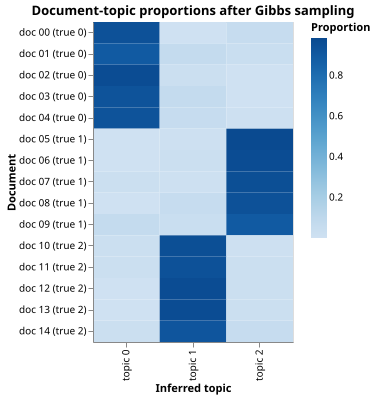

Topic Modeling a Document Corpus
The Problem
- A corpus of documents often covers several recurring themes, but labeling each document by hand is slow and subjective.
- Topic modeling discovers those themes automatically by finding groups of words that tend to appear together across documents.
- The approach here:
- Generate a synthetic bag-of-words corpus in which each document is produced by one of three topics, each with a distinct vocabulary.
- Represent each document as a term-frequency (TF) vector: one integer per vocabulary word recording how often that word appears.
- Run k-means clustering on those vectors to find groups of documents that use similar words.
- Compare results using raw TF counts and length-normalized TF vectors.
Why is topic modeling called an "unsupervised" method?
- Because it requires labeled training documents to identify topics.
- Wrong: topic modeling discovers structure from the text alone, with no labels provided; that is precisely why it is called unsupervised.
- Because it infers topic structure from the documents themselves, with no
- pre-specified topic labels.
- Correct: the algorithm finds groupings based entirely on patterns of word use, without any human-assigned category names or example documents.
- Because it only works on documents where the topics are already known.
- Wrong: the method is designed for cases where topics are unknown; if topics were known, supervised classification would be used instead.
- Because it ignores word order within a document.
- Wrong: ignoring word order (the bag-of-words assumption) is a modeling choice, not the reason for the label "unsupervised."
Generating Synthetic Data
- The corpus has three topics; each topic owns six consecutive words from a twenty-word vocabulary.
- Words from a topic's own set are sampled with weight 20; all other words receive weight 0.5, so about 96% of each document's tokens come from the document's true topic.
- Document lengths vary because token counts are drawn from a Poisson distribution with mean 40; this mimics realistic corpora where documents differ in length.
- Each row in the resulting DataFrame is one document with integer word-count columns.
true_topicrecords which topic generated each document and is used only in tests.
def make_corpus(
n_topics=N_TOPICS,
docs_per_topic=DOCS_PER_TOPIC,
vocab_size=VOCAB_SIZE,
words_per_topic=WORDS_PER_TOPIC,
mean_tokens=MEAN_TOKENS_PER_DOC,
topic_weight=TOPIC_WEIGHT,
background_weight=BACKGROUND_WEIGHT,
seed=SEED,
):
"""Return a Polars DataFrame with columns doc_id, true_topic, and one column per word.
Each row is a document; word columns contain integer token counts (raw TF vectors).
true_topic records which topic generated each document and is used only in tests.
"""
rng = np.random.default_rng(seed)
word_forms = [f"w{i:02d}" for i in range(vocab_size)]
records = []
doc_id = 0
for k in range(n_topics):
probs = np.full(vocab_size, background_weight)
start = k * words_per_topic
end = start + words_per_topic
probs[start:end] = topic_weight
probs /= probs.sum()
for _ in range(docs_per_topic):
# Use Poisson-distributed length so documents vary naturally.
n_tokens = int(rng.poisson(mean_tokens))
# Ensure at least one token so TF vectors are non-zero.
n_tokens = max(n_tokens, 1)
sampled = rng.choice(vocab_size, size=n_tokens, p=probs)
counts = np.bincount(sampled, minlength=vocab_size)
row = {"doc_id": doc_id, "true_topic": k}
for w, c in zip(word_forms, counts):
row[w] = int(c)
records.append(row)
doc_id += 1
return pl.DataFrame(records)
Building TF Vectors
- A term-frequency vector for document $d$ is the vector $\mathbf{t}d \in \mathbb{Z}^V$ where $V$ is the vocabulary size and $t_{dw}$ counts how many times word $w$ appears in document $d$.
- Extracting word-count columns from the DataFrame and converting to a NumPy matrix gives a two-dimensional array with shape $(\text{n_docs},\, V)$.
def make_tf_matrix(df):
"""Return a (n_docs, vocab_size) NumPy array of raw term-frequency counts.
The first two columns of df are doc_id and true_topic; remaining columns
are word counts. Returns the matrix and the list of word column names.
"""
word_cols = [c for c in df.columns if c not in ("doc_id", "true_topic")]
tf = df.select(word_cols).to_numpy().astype(float)
return tf, word_cols
Length Normalization
- Raw TF vectors are proportional to document length: a document twice as long will have roughly twice the counts for every word, even if its topic mix is identical.
- Dividing each document vector by its L2 norm removes this length effect:
$$\hat{\mathbf{t}}_d = \frac{\mathbf{t}_d}{\|\mathbf{t}_d\|_2}$$
- After normalization, two documents about the same topic are close to each other in Euclidean space even if one is three times longer than the other.
- This is analogous to comparing the shape of word use rather than its volume.
def normalize_rows(matrix):
"""Return a copy of matrix with each row divided by its L2 norm.
Documents with zero norm (all-zero rows) are left as zeros.
Normalizing makes k-means compare the shape of word use rather than
total volume: a short document and a long document about the same
topic end up close together after normalization.
"""
norms = np.linalg.norm(matrix, axis=1, keepdims=True)
# Avoid division by zero for any all-zero document.
safe_norms = np.where(norms == 0, 1.0, norms)
return matrix / safe_norms
A document has TF vector $[6, 0, 2, 0]$. What is its L2 norm?
- $\sqrt{6}$
- Wrong: the L2 norm squares each entry before summing: $\sqrt{6^2 + 0^2 + 2^2 + 0^2} = \sqrt{40}$.
- $\sqrt{40}$
- Correct: $|\mathbf{t}|_2 = \sqrt{6^2 + 0^2 + 2^2 + 0^2} = \sqrt{36 + 4} = \sqrt{40}$.
- 8
- Wrong: adding the entries directly gives 8, but the L2 norm takes the square root of the sum of squares, not the sum itself.
- $\sqrt{8}$
- Wrong: $\sqrt{8}$ would be the L2 norm of $[2, 2, 2, 2]$, not of $[6, 0, 2, 0]$.
The K-Means Algorithm
- K-means partitions $n$ documents into $K$ clusters by
alternating two steps until assignments stop changing:
- Assign each document to the nearest centroid (smallest Euclidean distance).
- Update each centroid as the coordinate-wise mean of all documents in that cluster.
- The centroid of a cluster is the "average document" for that cluster: its $w$-th coordinate is the average count (or average normalized count) of word $w$ across all documents assigned to the cluster.
- The assignment distance between document $\mathbf{t}$ and centroid $\mathbf{c}$ is the Euclidean distance:
$$d(\mathbf{t},\,\mathbf{c}) = \sqrt{\sum_{w=1}^{V}(t_w - c_w)^2}$$
- The algorithm needs $K$ to be chosen before running it; topic modeling uses domain knowledge or model selection criteria to pick $K$.
def kmeans(matrix, k, seed=SEED, max_iter=MAX_ITER):
"""Run k-means clustering and return (labels, centroids).
Algorithm:
1. Choose k distinct rows of matrix at random as initial centroids.
2. Assign each row to the nearest centroid (Euclidean distance).
3. Update each centroid as the mean of its assigned rows.
4. Repeat steps 2-3 until assignments stop changing or max_iter is reached.
Returns:
labels 1-D integer array of cluster indices, one per document.
centroids (k, vocab_size) array of final centroid vectors.
"""
rng = np.random.default_rng(seed)
n_docs = matrix.shape[0]
# Step 1: choose k random documents as initial centroids.
init_indices = rng.choice(n_docs, size=k, replace=False)
centroids = matrix[init_indices].copy()
labels = np.zeros(n_docs, dtype=int)
for _ in range(max_iter):
# Step 2: assign each document to the nearest centroid.
# Compute squared Euclidean distances via broadcasting.
diffs = matrix[:, np.newaxis, :] - centroids[np.newaxis, :, :]
sq_distances = (diffs ** 2).sum(axis=2)
new_labels = np.argmin(sq_distances, axis=1)
# Step 3: update centroids.
new_centroids = np.zeros_like(centroids)
for c in range(k):
members = matrix[new_labels == c]
if len(members) > 0:
new_centroids[c] = members.mean(axis=0)
else:
# Empty cluster: reinitialize to a random document.
new_centroids[c] = matrix[rng.integers(n_docs)]
# Stop when assignments no longer change.
if np.array_equal(new_labels, labels):
break
labels = new_labels
centroids = new_centroids
return labels, centroids
Top Words Per Cluster
- After k-means converges, the top words for each cluster are those with the highest value in the cluster's centroid vector.
- A high centroid coordinate for word $w$ means that documents in the cluster tend to use word $w$ frequently, making it a good label for the cluster's theme.
def top_words(centroids, word_cols, n_words=5):
"""Return a list of k lists, each with the top n_words for that cluster.
The top words for a cluster are those with the highest value in the
centroid vector: high centroid coordinates mean those words appear most
often (on average) among documents in that cluster.
"""
result = []
for c in range(centroids.shape[0]):
indices = np.argsort(centroids[c])[::-1][:n_words]
result.append([word_cols[i] for i in indices])
return result
Raw TF vs. Normalized TF
- With raw TF vectors, longer documents pull centroids upward uniformly across all words, which can make centroid coordinates reflect document length as much as topic content.
- With normalized TF vectors, centroids reflect the typical word-use pattern (shape) for documents in each cluster, independent of length.
- For this synthetic corpus both approaches recover the three topics because all documents have similar Poisson-distributed lengths; in a corpus with very unequal document lengths, normalization matters more.
Visualizing Cluster Centroids
def plot_clusters(labels, true_topics, centroids, word_cols, filename):
"""Save a heatmap of centroid word weights, one row per cluster."""
n_clusters, vocab_size = centroids.shape
rows = []
for c in range(n_clusters):
for j, w in enumerate(word_cols):
rows.append(
{
"cluster": f"cluster {c}",
"word": w,
"weight": float(centroids[c, j]),
}
)
df = pl.DataFrame(rows)
chart = (
alt.Chart(df)
.mark_rect()
.encode(
x=alt.X("word:N", title="Word", sort=word_cols),
y=alt.Y("cluster:N", title="Cluster"),
color=alt.Color(
"weight:Q",
title="Centroid weight",
scale=alt.Scale(scheme="blues"),
),
)
.properties(
width=400,
height=120,
title="Cluster centroids (word weights)",
)
)
chart.save(filename)

What does the centroid of a k-means cluster represent?
- The document in the cluster that was chosen as the initial seed.
- Wrong: the initial seed is used only for initialization; the centroid is updated after every assignment step and is usually no longer equal to any single document.
- The coordinate-wise mean of all documents currently assigned to the cluster.
- Correct: at each iteration the centroid is recomputed as the mean vector of its member documents, so it represents the "average" document in that cluster.
- The document in the cluster that is farthest from all other clusters.
- Wrong: that would be a notion from outlier detection, not from k-means; the centroid minimizes the sum of squared distances to its members, not maximizes them.
- The document with the highest total word count in the cluster.
- Wrong: the centroid is a mean over all cluster members, not a selection of one particular member based on its total count.
Testing
- TF matrix shape
make_tf_matrixmust return an array with one row per document and one column per vocabulary word; all entries must be non-negative.
- Normalized rows have unit length
- After
normalize_rows, every row must satisfy $|\hat{\mathbf{t}}_d|_2 = 1$. - Tolerance of $10^{-10}$ is used because floating-point division introduces rounding errors at the level of machine epsilon ($\approx 2\times 10^{-16}$ for 64-bit floats).
- A zero row must remain zero (no division by zero).
- After
- Top-words order
- Given a hand-crafted centroid matrix with known highest-weight words,
top_wordsmust return them in descending order.
- Given a hand-crafted centroid matrix with known highest-weight words,
- Topic recovery
- After running k-means with normalized TF on the synthetic corpus, every document in the same true-topic group must be assigned to the same cluster. The true-to-cluster mapping may be any permutation.
import numpy as np
from generate_topics import make_corpus, N_TOPICS
from topics import make_tf_matrix, normalize_rows, kmeans, top_words
def test_tf_matrix_shape():
# The TF matrix must have one row per document and one column per word.
df = make_corpus()
tf, word_cols = make_tf_matrix(df)
n_docs = len(df)
assert tf.shape == (n_docs, len(word_cols))
def test_tf_matrix_non_negative():
# All TF entries must be non-negative integers represented as floats.
df = make_corpus()
tf, _ = make_tf_matrix(df)
assert np.all(tf >= 0)
def test_normalize_rows_unit_length():
# After normalization, every non-zero row must have L2 norm equal to 1.
# Tolerance of 1e-10 accounts for floating-point rounding in the division.
df = make_corpus()
tf, _ = make_tf_matrix(df)
tf_norm = normalize_rows(tf)
norms = np.linalg.norm(tf_norm, axis=1)
np.testing.assert_allclose(norms, np.ones(len(norms)), atol=1e-10)
def test_normalize_rows_zero_vector():
# A row of all zeros must remain all zeros after normalization (no division by zero).
matrix = np.array([[0.0, 0.0, 0.0], [1.0, 2.0, 0.0]])
result = normalize_rows(matrix)
np.testing.assert_array_equal(result[0], [0.0, 0.0, 0.0])
def test_top_words_order():
# Given a hand-crafted centroid matrix, top_words must return the
# highest-weight words first.
centroids = np.array([[100.0, 90.0, 1.0, 0.0], [0.0, 1.0, 80.0, 70.0]])
word_cols = ["w0", "w1", "w2", "w3"]
result = top_words(centroids, word_cols, n_words=2)
assert result[0] == ["w0", "w1"]
assert result[1] == ["w2", "w3"]
def test_kmeans_label_count():
# k-means must return exactly one label per document.
df = make_corpus()
tf, _ = make_tf_matrix(df)
labels, centroids = kmeans(tf, N_TOPICS)
assert labels.shape == (len(df),)
assert centroids.shape[0] == N_TOPICS
def test_kmeans_label_range():
# Every label must be a valid cluster index in [0, K).
df = make_corpus()
tf, _ = make_tf_matrix(df)
labels, _ = kmeans(tf, N_TOPICS)
assert np.all(labels >= 0)
assert np.all(labels < N_TOPICS)
def test_kmeans_recovers_topics_normalized():
# After k-means on normalized TF vectors, documents from the same
# generating topic must all be assigned to the same cluster.
# The mapping from true topics to cluster indices may be any permutation.
df = make_corpus()
tf, _ = make_tf_matrix(df)
tf_norm = normalize_rows(tf)
labels, _ = kmeans(tf_norm, N_TOPICS)
true_topics = df["true_topic"].to_list()
for k in range(N_TOPICS):
group_labels = [
labels[i] for i, t in enumerate(true_topics) if t == k
]
assert len(set(group_labels)) == 1, (
f"True-topic group {k} split across clusters: {group_labels}"
)
Topic modeling key terms
- Bag of words
- A document representation that records only which words appear and how often, discarding word order; used here because topics are defined by co-occurrence patterns rather than syntactic structure
- Term frequency (TF) vector
- A vector with one entry per vocabulary word giving the count of that word in a document; raw TF is proportional to document length; normalizing by the L2 norm removes the length effect and captures only the shape of word use
- K-means clustering
- An iterative algorithm that assigns each document to its nearest centroid, then updates centroids as the mean of their members; repeats until assignments stop changing; requires the number of clusters $K$ to be specified in advance
- Centroid
- The coordinate-wise mean of all documents assigned to a cluster; high centroid coordinates indicate words that are used most often in that cluster and serve as labels for the cluster's theme
- L2 normalization
- Dividing a vector by its Euclidean length $|\mathbf{t}|_2 = \sqrt{\sum_w t_w^2}$ so that the result has unit length; makes k-means compare the shape of word use rather than total token volume
From K-Means to Probabilistic Topic Models
- K-means assigns each document to exactly one cluster.
- In practice, a document can be about more than one topic: a biology paper might
discuss both genetics and statistics.
- Latent Dirichlet Allocation (LDA) is a probabilistic generalization of this idea:
rather than assigning each document to exactly one topic, it allows each document
to be a mixture of topics, and each topic to be a distribution over words.
- LDA inference uses Bayesian methods (specifically collapsed Gibbs sampling, a form
of Markov chain Monte Carlo) and requires more advanced statistics than k-means.
Exercises
Do the math
Consider two document vectors $\mathbf{a} = [3, 4]$ and centroid $\mathbf{c} = [0, 0]$. What is the Euclidean distance $d(\mathbf{a}, \mathbf{c})$?
Effect of K
Run k-means on the normalized TF matrix with $K \in {2, 3, 4, 5}$. For $K = 3$, the three clusters should match the three generating topics. What happens to the cluster centroid heatmap when $K = 4$? Does the extra cluster split one of the true topics in two, or does it find a different grouping? Explain why increasing $K$ beyond the true number of topics does not necessarily improve the result.
Effect of initialization
K-means can converge to different solutions depending on which documents are chosen as initial centroids. Run k-means on the normalized TF matrix 10 times, each time with a different random seed. How often does the algorithm recover all three true topics? What happens in the runs that fail to recover them?
Mixed documents
Modify make_corpus to generate five documents that draw 50% of their tokens
from topic 0 and 50% from topic 1.
Add those documents to the corpus and re-run k-means.
Which cluster do the mixed documents end up in?
Plot the centroid weights for those documents alongside the cluster centroids
to show why the algorithm places them where it does.
Inertia
The within-cluster sum of squared distances (inertia) measures how tightly packed each cluster is:
$$\text{inertia} = \sum_{k=0}^{K-1} \sum_{d:\,\text{label}(d)=k} \|\hat{\mathbf{t}}_d - \mathbf{c}_k\|_2^2$$
Implement inertia(matrix, labels, centroids) and plot inertia against $K$
for $K \in {2, 3, 4, 5, 6}$.
The "elbow" in the plot (where inertia stops dropping sharply) is a common
heuristic for choosing $K$.
Does the elbow occur at $K = 3$ for this corpus?